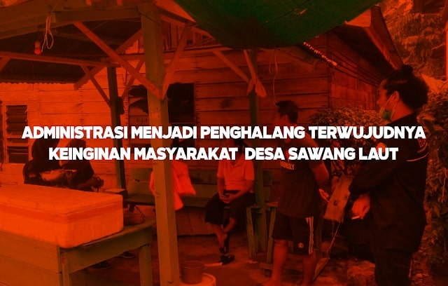

Administrasi Menjadi Penghalang Terwujudnya Keinginan Masyarakat Desa Sawang Laut
Latihan Kepemimpinan Tingkat II
Pada tanggal 10 Agustus 2020, Himpunan Mahasiswa Kundur (HIMK) Tanjungpinang-Bintan mengadakan kegiatan Latihan Kepemimpinan Tingkat II. Kegiatan ini berlangsung selama tiga hari, dari tanggal 10 hingga 12 Agustus 2020, di tiga kecamatan di Pulau Kundur.
Tujuan dari kegiatan ini adalah untuk meneliti permasalahan di lingkungan masyarakat, baik dalam bentuk infrastruktur pembangunan maupun masalah sosial lainnya. Mahasiswa diharapkan dapat menemukan solusi yang tepat sehingga hasil pemikiran peserta LK 2 dapat dijadikan solusi untuk masalah yang ada sesuai dengan tema kegiatan “Herbalisasi Intelektual”.
Pelaksanaan di Desa Sawang Laut
Senin, 10 Agustus 2020 jam 13:00 WIB, kami berkumpul di Stadion Mini untuk persiapan keberangkatan. Saya ditempatkan di Desa Sawang Laut, tepatnya Kobel Laut, bersama Julandari, Sobirin, dan Yogi Pangestu. Jam 16:00 WIB kami tiba di Desa Sawang Laut dan langsung bertemu dengan RT setempat yang kemudian mengantarkan kami ke rumah warga tempat kami menginap. Masyarakat desa ini memberikan kesan yang sangat baik terhadap kedatangan kami.
Diskusi dengan Masyarakat
Selasa, 11 Agustus 2020, kami berdiskusi dengan RT dan beberapa masyarakat setempat. Salah satu warga mengatakan bahwa mereka berharap pihak desa atau pemerintah segera memperbaiki jalan rusak dan mengajukan permohonan untuk penerangan jalan guna menghindari hal yang tidak diinginkan.
Terkait bantuan sosial selama pandemi COVID-19, Desa Sawang Laut memiliki 182 penerima BLT (bantuan langsung tunai) dari 20 RT. Selain itu, kami berdiskusi tentang potensi desa, terutama dalam sektor perikanan.
Potensi dan Kendala Desa Sawang Laut
Desa Sawang Laut, di Kecamatan Kundur Barat, Kabupaten Karimun, memiliki potensi besar di sektor perikanan. Mayoritas masyarakat menggantungkan hidupnya pada perikanan. Pada tahun 2016, masyarakat membentuk kelompok nelayan untuk mengembangkan potensi ini.
Namun, kurangnya pemahaman administrasi menjadi penghambat. Masyarakat berharap adanya program pemberdayaan seperti pelatihan nelayan, penyediaan rumah es untuk ikan, dan fasilitas penambatan perahu.
Diskusi dengan Perangkat Desa
Rabu, 12 Agustus 2020, kami berdiskusi dengan sekretaris desa (sekdes). Beliau menyampaikan bahwa permohonan dari masyarakat harus disampaikan saat musyawarah desa dan didokumentasikan untuk disampaikan pada musrenbang. Kurangnya pemahaman administrasi masyarakat menjadi kendala dalam mewujudkan permohonan mereka.
Kesimpulan dan Harapan
Minimnya pemahaman administrasi dan kurangnya kepekaan dari pihak desa sangat berpengaruh terhadap pemberdayaan dan perkembangan potensi masyarakat. Permohonan sulit diwujudkan tanpa administrasi yang jelas.
Diperlukan sosialisasi berkala dari pihak desa untuk meningkatkan pemahaman masyarakat tentang pentingnya administrasi. Selain itu, pemerintah diharapkan lebih cepat tanggap terhadap masalah infrastruktur untuk menunjang potensi dan kesejahteraan masyarakat desa.
Penulis: Nurmalina Juwita